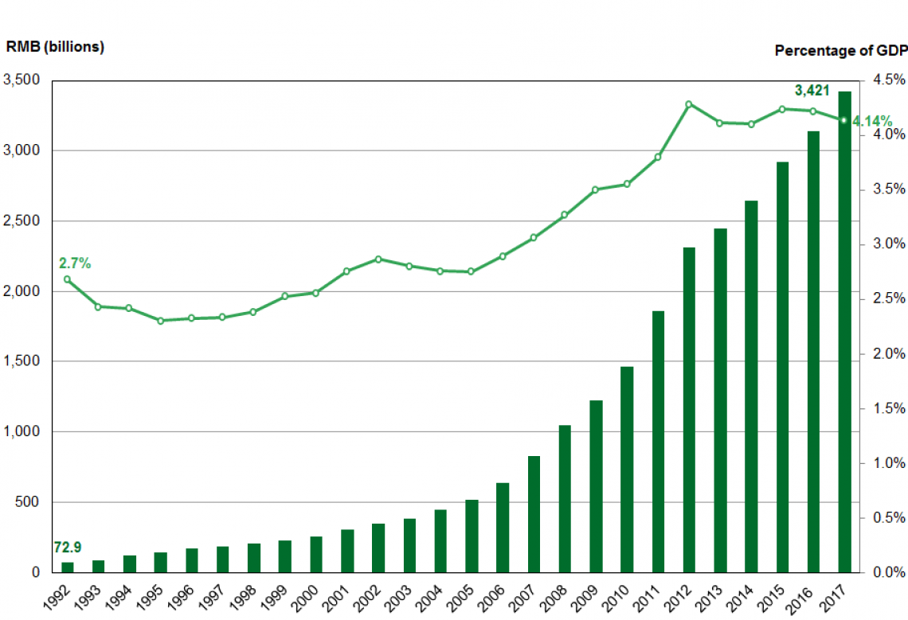

Economic Spending by G20 Members
Healthcare, Education & Military
Education Spending
Education is one of the most important economic indicators of a nation: greater investment in human capital is directly proportional to the growth of an economy. Thus, in this project we're also interested in looking at how much is spent on education by our group of G02 members.
From the graph below, we can see most of our members roughly spend at the lower end of the spectrum, with
only a few -- Germany, the UK, Brazil, and the US -- spending over $100 billion dollars a year on average
on education. The US by far exceeds it counterparts as it spent over $880 billion on education.
One important note to make in this section on education is the elephant in the room: We're missing information
on China. In fact, there's no recent and readily available public data from China on their education expenditures.
We do know, however, that as China pushes for greater global prominence, it has been attracting more talent to
its universities. In fact, along with the US, it hosts a great number of the top universities listed under the
Center for World University Rankings list.
As we saw from our map above, the US spends the most by far on education in nominal dollar value, and we can see that better with our time series chart below. Moreover, we can see that the US has also been steadily increasing its spending over the period between 2011 and 2017. All other nations cluster below the $300 billion dollar threshold.
In relation to GDP, however, the US lands just about at center of the list. Compared to the rest of our list, Brazil spends the most as a share of their GDP, just above 6%, followed by the UK at almost 5.5%. While most countries look to be maintainin their share of GDP on education, Russia appears to have jumped its investment in education, at least between 2016 and 2017.
As mentioned, no data on China is available for our exploration and analysis on this project, however, there is data available from UNICEF China regarding the country's spending as a percent of GDP (below). While China was still on the lower end of the group on education spending as a share of GDP up to 2017, we can clearly see that over the past decades the country has made exponentially grown their investment.

Looking at the education spending per capita in relation to GDP per capita, we see education is only a small ratio of GDP for each country.
Between 2017 and 2011, Argentina has had the most increase in education expenditures as a percent compared to all other countries on our list, followed by the US. Japan has seen the greatest shrinkage of spending between the two years.
Nominally, the US has increased its spending significantly while Japan has also shrunk spending nominally, by almost $70 billion, twice as much as the US has increased its spending.